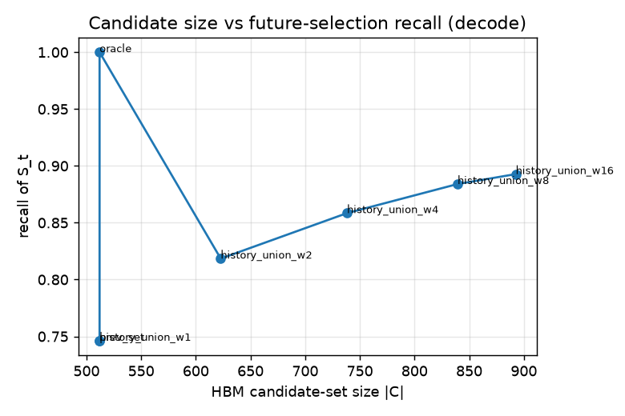
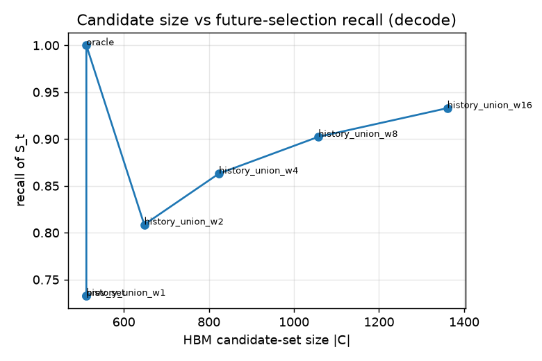
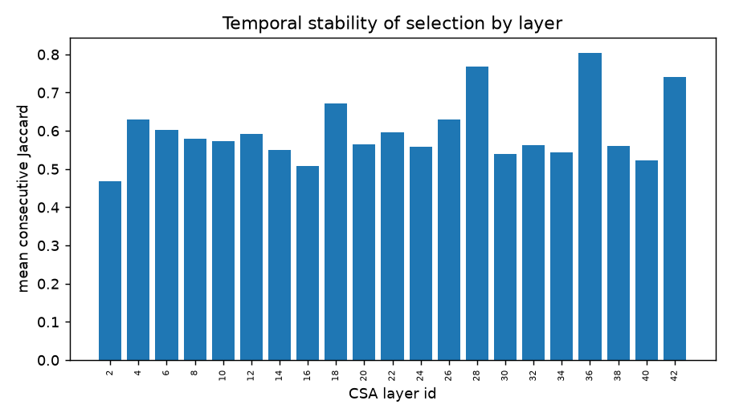

DeepSeek-V4 Sparse Attention — Part I
What the model's "sparse attention" actually is, and a measurement of how predictable its per-token KV selection is. Written for readers new to these concepts, with diagrams throughout.
§Overview in one minute
Modern long-context LLMs don't look at every past word for every new word — that would be far too slow. Instead they select a small subset of the past to attend to, per token, per layer. This report explains that selection mechanism in DeepSeek-V4, then measures a simple but consequential question: is the selected set predictable from recent history? If yes, a memory system could keep just the likely-needed entries in fast memory.
§1Why long context is expensive
To understand the trick, first see the problem it solves.
A transformer answers each new word by "attending" to earlier words: it compares the new word's query against every earlier word's key, and mixes their values by how well they match. With N words in the context, each new word compares against up to N earlier ones — so processing a whole document of length N costs on the order of N×N comparisons. Double the document, quadruple the work.
The model also must store a key and value for every past token — the so-called KV cache. At a million tokens this is enormous, and just reading it from GPU memory each step becomes the bottleneck.
Left: dense attention fills the whole grid. Right: sparse attention keeps only a few cells per row — the model's job is to pick the right few.
§2What DeepSeek-V4 sparse attention is
DeepSeek-V4 attacks the cost in two ways at once: it compresses the past into fewer entries, then selects only a few of those entries to attend to. (Details from the DeepSeek-V4 technical report.)
Step 1 — Compression: squeeze many tokens into one entry
Instead of one KV entry per token, the model learns to summarize a block of tokens into a single "compressed entry." Two compression strengths are used:
- CSA — Compressed Sparse Attention: every
m = 4tokens become 1 entry (a 4× shrink). Used together with selection (Step 2). - HCA — Heavily Compressed Attention: every
m′ = 128tokens become 1 entry (a 128× shrink). So few entries result that the model just attends to all of them (no selection needed).
A compressed entry is a learned weighted summary of its block — like a one-line digest of a paragraph, keeping what matters.
Step 2 — The "lightning indexer": pick the top-512 entries to attend to
For each new token, a small, fast network — the lightning indexer — scores all compressed entries for relevance, then keeps only the top k = 512. The expensive attention then runs over just those 512 (plus a small sliding window of the most recent tokens, so local detail is never lost).
The green set on the right — the top-512 selected entries for a given layer l and token t — is what we call Sl,t. This whole study is about Sl,t.
How the 43 layers are arranged
DeepSeek-V4-Flash has 43 transformer layers. They alternate between the two compression types, with a few plain local layers:
Only the CSA layers actually select — those are the layers we instrument and study.
Why this is efficient (numbers from the paper)
Compressing then selecting turns the quadratic blow-up into roughly flat per-token cost. The DeepSeek-V4 report puts the savings at a fraction of the previous generation (V3.2) at 1M-token context:
l selects (its top-512) when generating token t. Everything below measures how this set behaves over time.§3The hypothesis — and why it matters for hardware
If the selected set Sl,t changes only slowly from token to token, you don't need all compressed entries in fast memory — only the ones likely to be picked next.
GPU memory (HBM) is fast but small and expensive. A larger, slower tier (e.g. LPDDR) could hold the bulk of the KV cache, while a small predicted candidate set is kept "hot" in HBM, fetched ahead of time. The whole approach hinges on one empirical question: how predictable is Sl,t? That is what Part I answers.
If prediction works, the green box covers almost every actual selection — so the model rarely has to wait on the slow tier.
§4How we measured it
We ran the real model, recorded exactly which entries it selected, and analyzed the sequences offline.
- Correct model, real selections. We run DeepSeek-V4-Flash with vLLM on an NVIDIA B200 and verify it produces correct answers (it retrieves facts buried 16K tokens back). We hook the 21 CSA indexers so that every time a layer selects its top-512, we copy that set out to disk — one row per (layer, token).
- Workloads. Two kinds. Synthetic "needle" prompts (a fact buried in filler at varied positions) give controlled, repeatable cases. Natural prompts (real technical prose and code) test that findings aren't an artifact of synthetic text.
- Contexts & sparsity. 4K, 8K, 16K, 30K tokens. Because top-k is fixed at 512 while candidates grow with context, sparsity ranges from ~2× (4K) to ~15× (30K) — i.e. at 30K the model keeps only ~1 in 15 entries.
- Decoding. Greedy (deterministic), up to ~191 generated tokens per prompt so we can watch the selection evolve over a long sequence.
§5The metrics, explained in plain words
Every number below is one of these. Each compares the current selection St to recent ones.
Previous-set recall
Of the 512 entries the model selects now, what fraction were also in the selection one token ago? "0.73" means 73% of today's picks were already picked last step. Higher = more predictable from the immediate past.
History-union recall @ window W
Take the union of the selections from the last W tokens; what fraction of the current selection does it cover? A bigger window covers more but is a bigger "hot set" to keep in fast memory. We report W = 2, 8, 16.
Candidate-size vs recall
The trade-off curve: if you keep a candidate set of size B in HBM, how much of the next selection does it contain? This is the headline knob for the memory system.
Temporal decay (recall vs lag k)
How similar is today's selection to the one k tokens ago? If it stays high for large k, a multi-step history is useful (you can prefetch with lookahead).
Per-layer Jaccard
The overlap (intersection ÷ union) between consecutive selections, measured separately per layer — reveals which layers are stable and which churn.
Selected-entry lifetime
Once an entry gets selected, for how many consecutive steps does it keep being selected before dropping out?
§6Results — and what the numbers mean
Headline: selections are strongly predictable from recent history
Keeping just a recent-history "hot set" covers most of the next selection. At 16K context (~4,100 candidate entries), the previous selection alone covers 73% of the next, and a 16-step history union (~960 entries, 23% of candidates) covers 89%:
| Candidate set | size (of ~4,100) | recall of next selection |
|---|---|---|
| previous selection | 512 (12.5%) | 0.732 |
| history union, W=2 | 632 | 0.807 |
| history union, W=8 | 882 | 0.880 |
| history union, W=16 | 961 (23%) | 0.892 |
| oracle (perfect) | 512 | 1.000 |

How it scales with context (more sparsity = harder, but still strong)
As context grows, the model selects 512 from a larger pool, so single-step prediction gets harder — but a recent-history union stays very effective even at 15× sparsity:
| Context | candidates | sparsity | prev-recall | union-8 | union-16 | per-sample σ |
|---|---|---|---|---|---|---|
| 4K | 1,036 | 2× | 0.864 | 0.972 | 0.985 | 0.004 |
| 8K | 2,050 | 4× | 0.802 | 0.944 | 0.966 | 0.007 |
| 16K | 4,100 | 6× | 0.746 | 0.884 | 0.893 | 0.013 |
| 30K | 7,692 | 15× | 0.733 | 0.902 | 0.933 | 0.011 |
Read it this way: even at 30K with 15× sparsity, an 8–16 step history covers ≥90% of the next selection.

Temporal decay: selections stay correlated many steps back
Recall of the current selection against the one k steps earlier. It decays gently — so a multi-step lookahead is informative (useful for prefetching ahead of time):
| lag k → | 1 | 2 | 4 | 8 | 12 | 16 |
|---|---|---|---|---|---|---|
| 4K | 0.86 | 0.84 | 0.81 | 0.79 | 0.77 | 0.76 |
| 8K | 0.80 | 0.77 | 0.73 | 0.69 | 0.67 | 0.65 |
| 30K | 0.73 | 0.69 | 0.64 | 0.59 | 0.58 | 0.56 |
Not all layers are equally predictable
Consecutive-selection overlap (Jaccard) varies by layer: most CSA layers sit around 0.55–0.58, a few mid-stack layers churn more (~0.47), and some late layers are very stable (up to 0.83). This argues for per-layer memory budgets rather than one-size-fits-all.

Selected-entry lifetime
Most selected entries are transient — a typical entry stays selected for a mean of ~3.1 steps (median 1), but a tail persists up to ~13 steps. So a good policy keeps "sticky" entries and quickly evicts one-shot ones.
§7Is it robust? Many samples & real text
A single prompt could be a fluke. It isn't.
Many samples. Across 24 diverse 16K prompts (different facts, positions, phrasings) the previous-set recall is 0.744 ± 0.013 — every single prompt lands in 0.72–0.77. The effect has tiny spread.
Real text matches synthetic. Natural prose and code (sliced from real documents) reproduce the same locality as the controlled needles:
| Dataset | prev-recall | union-8 | union-16 | σ | N |
|---|---|---|---|---|---|
| NAT prose 8K | 0.785 | 0.943 | 0.966 | 0.031 | 12 |
| SYN needle 8K | 0.802 | 0.944 | 0.966 | 0.007 | 12 |
| NAT prose 16K | 0.730 | 0.915 | 0.945 | 0.015 | 6 |
| SYN needle 16K | 0.746 | 0.884 | 0.893 | 0.013 | 24 |
| NAT code 8K | 0.804 | 0.951 | 0.971 | 0.011 | 4 |
§8Takeaways
- DeepSeek-V4 attends to only a top-512 selected, compressed slice of the past per CSA layer.
- That selection is highly predictable from recent history: ~73–86% overlap with the previous step; ~90–99% covered by a short history window.
- It holds across context lengths, 60+ prompts, and real text, with tiny variance.
- Layers differ in stability → per-layer budgets make sense.
- This is the green light for the prediction methods in Part II.
§9Honest limitations
- "Recall" here is an upper bound on what a real system achieves — it ignores prefetch timing and bandwidth (that's the future simulator).
- A selected entry that was never seen before can't be predicted by any history method, so coverage has a natural ceiling below 100%.
- Single-GPU memory capped our context at ~32K; reaching 128K–256K needs multi-GPU.
- Selections come from the FP4/FP8 quantized model with FP8 KV cache; quantization may shift selections slightly versus full precision.
- Workloads are synthetic + this project's own text; a public long-context benchmark would broaden external validity.